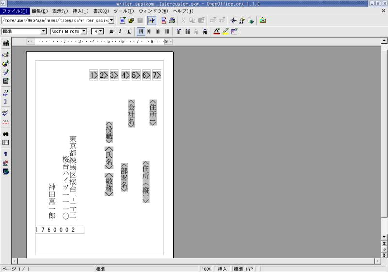
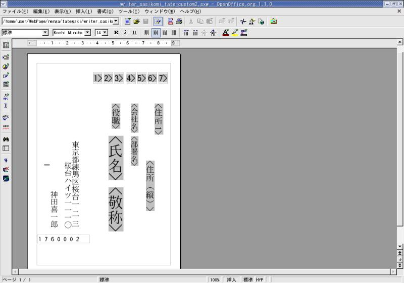
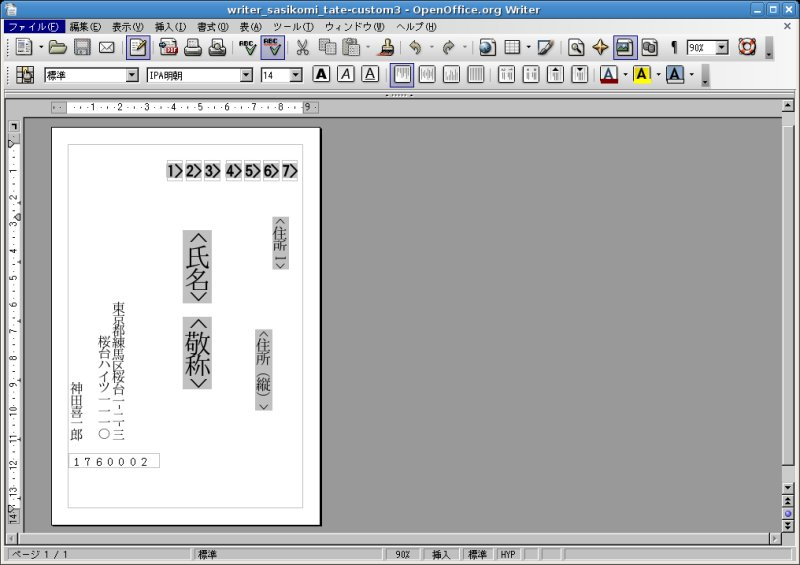
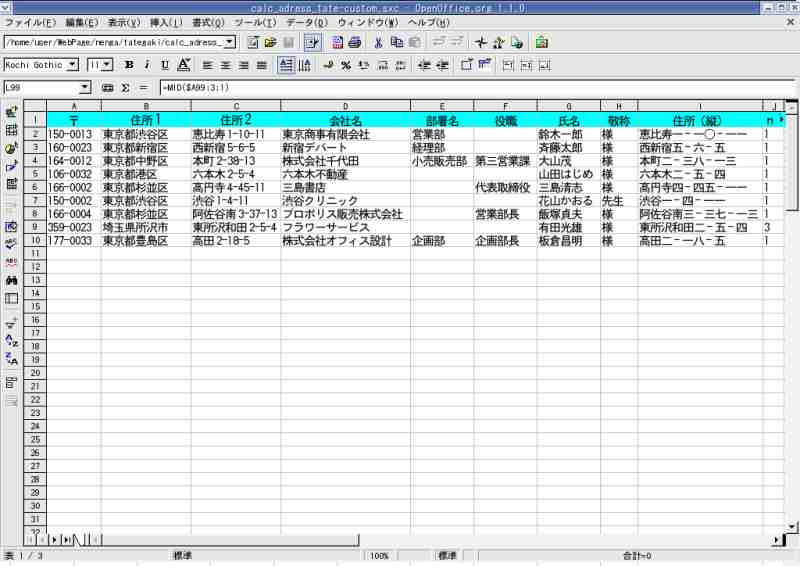
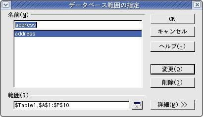
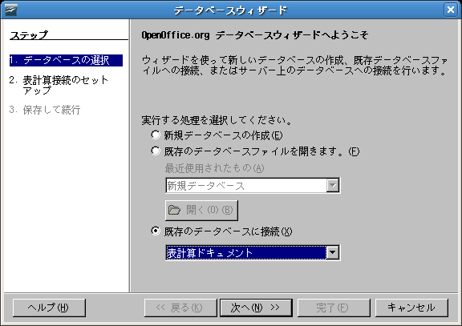
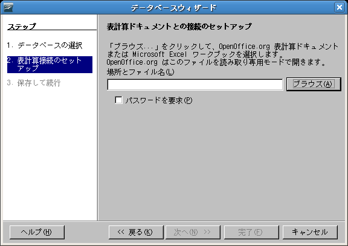
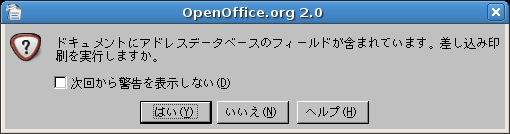
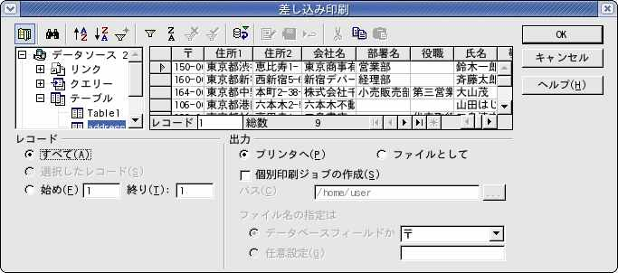

OpenOffice.org 3 / 2 で簡単はがき宛名印刷はじめにこのペ−ジでは、無料で配布されているオフィススイート OpenOffice.org *1 バージョン 3 あるいは 2 を利用して、年賀状や暑中見舞いなどの挨拶状の宛名印刷(表書き)を行う簡単な方法を説明します。出来るだけ簡単な手順 で作成できるように、テンプレ−ト を利用して順番に進めていきます。 1.事前準備/テンプレ−トの入手差 込機能を使った宛名印刷 という解説ペ−ジが OpenOffice.org 日本語サイトにあります。ここから必要なテンプレ−ト一式をダウンロ−ドして、入手することにします。テンプレ−トを使 うことで、作成手順を一気に簡略化 できます。 なお、差 込機能を使った宛名 印刷 をご覧になってすぐ理解できる方はこのペ−ジの以下の解説は蛇足で必要の無いものと思いますので、どうぞ読み飛ばしてください。 標準テンプレ−トhttp://ja.openoffice.org/documents/tips/archives/tategaki.lzh からダウンロ−ドし解凍(展開)します。解凍後、次の3つのファイルが表示されます。 ・Calcの住所録(縦書き、郵便番号処理ずみ)
Linux 用テンプレ−ト(カスタマイズ版)上記公式サイトからダウンロ−ドしたテンプレ−トは、今回検証したシステムではそのままで利用不可能であったため、若 干修正を行いまし た。次のリンク先からダウンロ−ドできます。名前をつけて保存した後で、改めて OpenOffice.org で開けば正常に表示されます。(デフォルトのフォントは(代替)東風明朝又はIPA明朝に変更してあります。)
   レイアウトの確認をする「背景の年賀状イメージ」を画面の背景に取り込むと、実際に近いレイアウトが確認できます。 年賀状イメージが取り込まれ、下図のように表示されます。レイアウトは画面上で直接修正できます。会社名や部署名、役
職らんなど不要な
項目（フィー
ルド）があれば削除しておく方が良いでしょう。たとえ空欄であってもレイアウトどおりに項目らんまで印刷されてしまうこ
とがあります（プログラム上のバグ
ではないかと思われます）。 2.住所録を作成するテンプレ−ト/Calcの住所録 を元にして、住所録を作成します。このテンプレ−トにはあらかじめ100件分の計算式を含めていますので、100件まで はそのままで活用できます。100 件を超えて追加する際には計算式を追加コピ−してください。(計算式のコピーは、マウスでドラッグするだけで行えま す。)  既存の住所録があれば、必要な箇所だけをコピ−し貼り付けると効率的に作業できます。 住所録を追加した場合は、[メニュー] > [データ] > [範囲の指定] よりデータベースの範囲を追加・修正します。一覧に表示された「address」を選択し、[OK]ボタンを押します。 ここで修正した結果は、差し込み印 刷時の範囲指定に反映されます。(初期設定では9件までしか指定されていません。)  例えば、範囲らん($Table1.$A$1:$P$10) の最後の数字10を20に変更すれば、住所録の20行目まで範囲が追加されます。 3.差出人の住所氏名を入力するWriterの差込印刷ファイル を開いて、差出人の住所を入力します。(この場合、上書きしてひな型のデ−タと置き換えることになります。)縦書印刷時 に漢数字に置き換えたい場合、「住 所2」に数字を全て半角数字で入力しなくてはいけないので注意してください。全角数字は漢数字に変換されません。 なお、はがきの宛名面(表)に差出人の住所を印刷しないときは、該当部分の住所氏名を削除し空白にしておきます。 4.OpenOffice.org Base のデ−タソ−スに登録するBase を開いて、データベースウィザードにしたがって設定を行います。 
 デ−タソ−スの名前： デ−タソ−ス 2 設定後、「完了」ボタンを選択すればウィザードが終了します。
5.OpenOffice.org Writer で差し込み印刷を行う作成した差込印刷ファイルを OpenOffice.org Writer で開きます。メニュ−から [印刷] を選択します。  [はい] を選択し、差し込み印刷の詳細設定をします。複数の日本語フォントがパソコンにインストールされていて、書体の変更をし たいときは、[メニュー] > [編集] > [すべてを選択] > [フォント一覧] より希望のフォントを選択します。 [OK] ボタンで印刷を開始します。  出力先をファイルにすれば、印刷イメージを画面に表示することもできます。事前にテスト印刷を行い、レイアウトが正し いかどうかの確認 をしてから、本印刷を実行してください。 補足事項検証を行ったシステム構成以下のシステムの下で確認を行いました。同様のシステム構成では問題なく利用できると考えられますが、必ず正常に宛名 印刷ができるとは 限りません。 OS・・・・・・・Debian/GNU Linux 5.0(Lenny)/4.0 (Etch)、Mandriva Linux 2007 上記項目で説明のために使用したイラスト（スクリーンショット）の一部は OpenOffice.org 1.x のものですが、OpenOffice.org 3.x/2.x でも大きな変更はありません。 なお、OpenOffice.org 2 以降の新機能「差し込み印刷ウィザード」は、この作業手順では使用しません。したがって、JRE (java ランタイム環境) を必要としません。 その他
|
{kind=link}